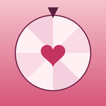

Une minute pour l'installer. Ensuite, elle s'ouvre comme une vraie app, en plein écran.
samestformidable.github.io/sanouk
Ouvre-la dans Safari. Si le lien s'ouvre dans WhatsApp ou Instagram, copie-le et colle-le dans Safari.
Tu arrives sur l'accueil de Sanouk, avec nos deux prénoms.
Le carré avec une flèche vers le haut, en bas de l'écran. S'il n'y est pas, touche d'abord •••.
Fais défiler la liste vers le bas si tu ne le vois pas tout de suite.
Si l'option « Ouvrir comme app web » apparaît, laisse-la activée. L'icône de la roue rose arrive sur ton écran d'accueil.
Touche ton prénom.
4 chiffres, à taper deux fois. Garde-le pour toi.
Tape un titre, l'affiche apparaît, touche +. Tu peux changer d'avis jusqu'au tirage.
On touche « Tourner la roue », chacun tape son code sans que l'autre regarde, et la roue choisit le film. Un joker chacun pour refuser le résultat une fois.